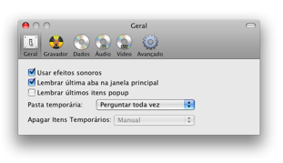
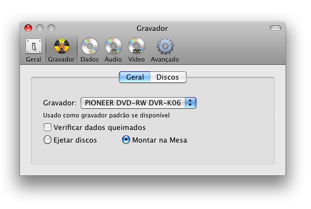
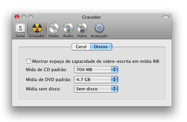
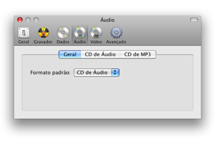
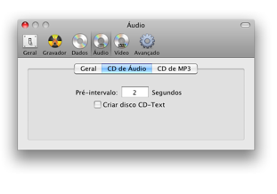
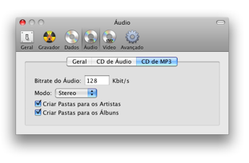
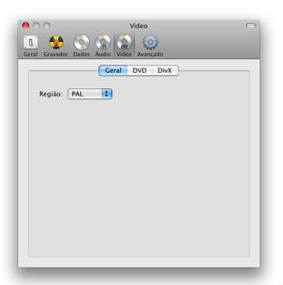
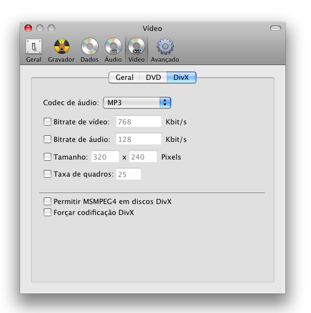
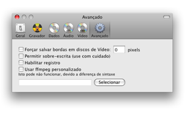

Preferências
Burn tem vários ajustes. Nós vamos discutir
eles aqui.
Geral:

Ajustes gerais para a interface do Burn. Também
ajustes para os arquivos temporários e como lidar com eles.
Gravador:

Gravador padrão e ajustes usados após
gravação.

O primeiro ajuste vai mostrar o espaço possível de
sobrescrever na janela do Burn. As últimas opções
estão em uso quando não há disco no gravador.
Dados:

Você pode ajustar o formato de dados padrão se o
Burn não lembrar os últimos itens do popup (Geral).
Pacotes de arquivos são pastas tratadas como arquivos,
você pode ajustar como Burn vai mostrar eles. Você pode
também ajustar diferentes opções de tamanho. O
último é o mais intenso para o processador.
Áudio:

Você pode ajustar o formato de áudio
padrão se o Burn não lembrar os últimos itens do
popup (Geral).

Ajustes para um disco CD de Áudio. Pré-intervalo é
o número de segundos antes que uma trilha de áudio
começar. CD-Text pode ser adiciona a um disco. Alguns tocadores
de CD podem usar isso para obter informações sobre a
trilha (como artista, álbum, etc). Mas isso deve ser suportado
pelo gravador.

Ajustes para um disco MP3. O bitrate de áudio é o
número de Kbit por segundo que será usado. Quanto maior o
valor, maior será o tamanho do arquivo, mas também maior
qualidade. Burn pode também criar pastas no disco MP3.
Video:

Você pode ajustar o formato de vídeo
padrão se o Burn não lembrar os últimos itens do
popup (Geral). També a região pode ser ajustada aqui.

A aba DVD tem opções para ajuste de qualidade, tamanho e
formato de áudio. Também há algumas
opções avançadas que devem ser úteis para
criar discos DVD Vídeo. A última seção
é para escolha de um Tema, formato Normal (4:3) e Widescreen
(16:9).

A aba Divx também tem opções para
ajuste de qualidade, tamanho e formato de áudio. Também
é possível habilitar MSMPEG4 que não funciona em
todos tocadores DivX. Para converter arquivos já em formato avi
Divx você pode forçar codificação.
Avançado:

Salvar bordas irá criar bordas que ajudam a mostrar
vídeos em dispositivos que dão muito zoom no
vídeo. Esta opção não está
totalmente imlementada, ela não calcula a taxa de aspecto do
vídeo ainda. Sobrescrevendo vai remover o aviso quando
sobrescrever
gavaçao. Use estao pção com cuidado,
já que não é seguro se todos os gravadores podem
lidar com isso. Registro é normalmente usado para encontrar
problemas com o Burn. Burn usa ffmpeg para converter arquivos de
vídeo a áudio. voce pode selecionar para usar sua
própria versão, mas ela pode não funcionar devido
a diferenças.